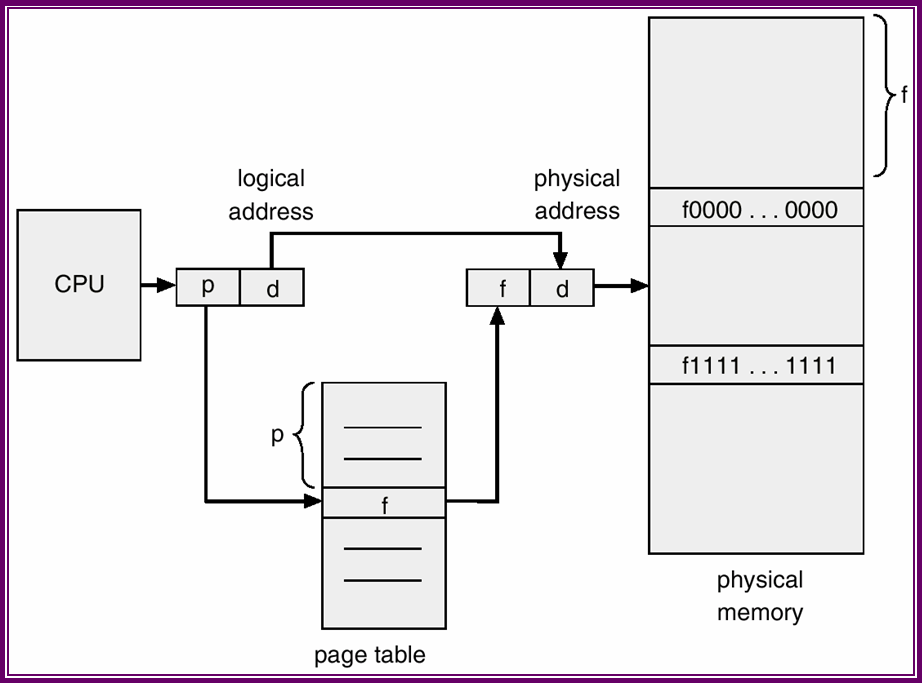

Lecture-26
Operating Systems (CS330)
So, far we have seen two techniques, namely Contiguous Memory Allocation and Segmentation, for address translation. The major problem that both these techniques suffer from is that of external fragmentation. External fragmentation occurs because physical memory is allocated in variable sized contiguous chunks. Paging eliminates external fragmentation by ensuring that requests for contiguous chunks of physical memory are always of the same size.
In paging, the virtual address space is divided into equal sized pages. Each accessible page is mapped to an equal sized physical memory frame. However, contiguous pages in the virtual address space need not map to adjacent frames in the physical memory. A page table keeps track of the mapping from virtual pages to physical frames.
With this scheme there is no problem of external fragmentation since all requests for contiguous physical memory are of the same size (page or frame size). However, paging leads to the problem of internal fragmentation. Since memory is allocated in units of frames, more memory than needed may be allocated in some cases. For example if the frame size is 1 KB and a process requires 8604 bytyes of memory, it would be allocated 9 pages, i.e., 9216 bytes of which 612 bytes are wasted due to internal fragmentation. On an average, half a page of memory would be wasted per contiguous region in the virtual address space. If the page size is not too large, this wastage is not very significant.
The address translation with paging is similar to that with segmentation, except that page size is fixed while segments could be variable sized. A virtual address is divided into two parts: the page number (p), and the page offset (d). The page number is used as an index into a page table. A page table entry contains the frame number the corresponding frame in the physical memory. The frame number is combined with the page offset to obtain the physical memory address location as illustrated below.

Address translation with paging
As in the case of segmentation, besides containing the physical frame number, each page table entry also usually contains a valid bit, and some protection bits. Some more bits are present to aid demaind paging (to be studied later).
The page table for the current process is usually stored in the main memory itself. A special register is used to indicate the (physical) address of the page table.
The main problem with paging is the amount of memory needed to maintain the page tables. For a typical processor with 32 bit addresses, 4K page size and 4 byte page table entries, the page table for a process would occupy 4MB of memory! For most processes, this amount may actually be more than the memory requirement of the process. Thus a lot of memory is being wasted just to keep track of the invalid pages. The size of the page table can be reduced by increasing the page size but that would increase the amount of internal fragmentation.
Address translation in a two level paging scheme.
Valid bit and protection bits are usually present in both the first level and second level page table entries. Note that the two level paging scheme is simlar to segmentation except that instead of storing segments contiguously in physical memory, the segments are paged; thus there is a page table (the second level page table) for each segment. The two level paging scheme reduces the overall size of page tables for small processes since the second level page table need not exist if the valid bit in the corresponding first level page table entry indicates the entire region to be invalid. Thus large regions of the virtual address space can be invalidated with very little overhead.
Another advantage of two level paging is that processes that share entire segments can share the page table for the segment as well. This also reduces the memory requirements.